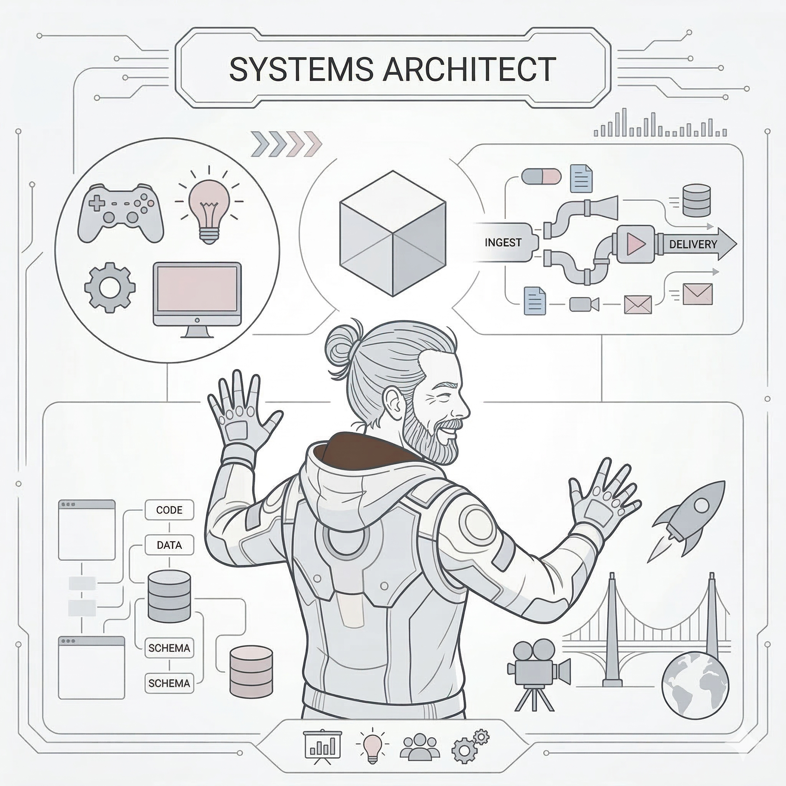
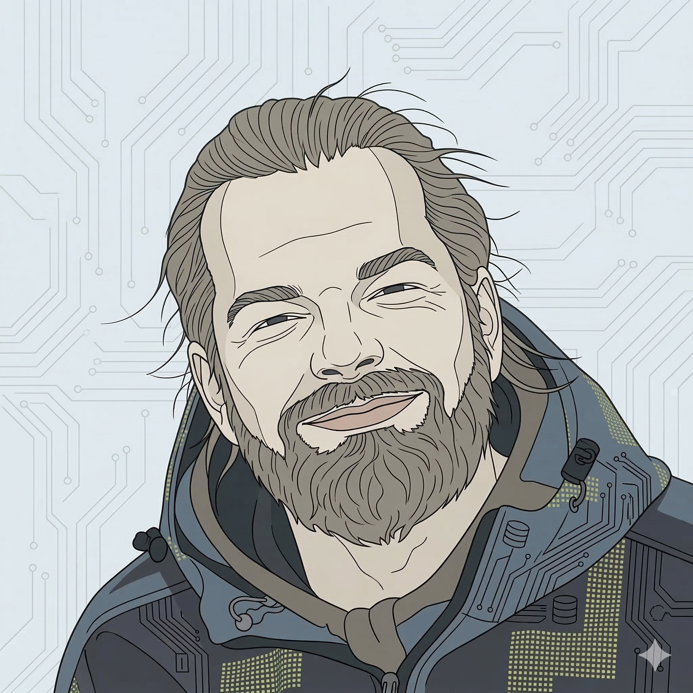

Acting as a force multiplier for lean, senior teams. Bridging technical architecture and creative vision for 20 years - now doing it faster with AI.
As a Media System Designer I see production as a system of interconnected assets and pipelines, an evolving puzzle with moving pieces. That lens is how I bridge technical architecture and creative vision, collapsing bottlenecks between crafts rather than managing around them.
As a Senior Producer I am the hub of the team - aligning, negotiating and making delivery feel inevitable rather than accidental. I stay embedded in the work rather than hovering above it. Today that means deploying AI as a practitioner's tool: building agentic workflows, generating production assets and automating the operational overhead that slows lean teams down.

Established and led a four-person AI-first pod carrying a 25-game live portfolio, with full P&L accountability reporting directly to founders. Drove technical debt reduction and infrastructure hygiene, including a full Facebook SDK migration, alongside seasonal LiveOps and ARPDAU experiments. Built AI-augmented workflows for release documentation, QA reporting and asset generation that let a lean team operate at far larger scale.
Ran up to three feature pods at the same time on Scrabble GO (40M+ downloads), owning every ceremony, board and dependency. Drove the release train initiative that replaced bloated, incident-prone releases and cut both live incidents and team burnout. Managed a non-negotiable GDPR mandate mid-milestone: expanded scope and designed a hybrid architectural solution with engineering and legal, delivering 100% compliance on deadline while protecting FTUE and retention KPIs.
Two sequential roles across four years. As Technical Producer and Agile Coach (2017-2019): drove CI/CD adoption, OKR alignment and PMO standards across multi-divisional engineering teams in a large-scale matrix organisation. As UI/UX Designer (2019-2021): implemented design system governance and technical integration between product and architecture teams.
Two sequential roles across three years. As Producer (2013-2015): shipped LiveOps events and ran an experimental speed-boat pod on Facebook platform for rapid hypothesis testing, targeting D7-D14 retention. As Product Manager (2015-2016): drove metric-driven feature development, A/B testing and monetisation strategy across web and mobile F2P titles.
Started as Build Engineer maintaining the mission-critical technical backbone of the Killzone franchise: branch architecture, build farm, patch pipelines and code integration coordination between development, QA and production. Physically forked Killzone Shadow Fall from Killzone 3 - promoted to Producer to shepherd the title through full AAA development to its PS4 launch.
Managed 50+ QA testers and end-to-end localisation pipelines for Guitar Hero and Call of Duty. Architected testing pipelines and owned first-party technical compliance (TRG) submissions for multiple Guitar Hero titles across PlayStation and Xbox platforms.
Technical and functional QA for localisation projects in Dublin. Bug identification, categorisation, reporting, regression passes and progress reporting for global clients. Foundation of platform compliance and QA standards experience.

Away from the professional systems, my creative outlets are woodworking and electronic music production, analog and digital processes that both reward design, planning and tactile problem-solving.
As a father of three in a multilingual family, my life is multicultural by design. I have always been a generalist by instinct, drawn to new crafts and willing to put in the planning and patience each one takes. That same thread runs through my work.
Personal / hobby tools
PRODUCTION & DELIVERY
GENRE & PLATFORM
TEAM & LEADERSHIP
TECHNICAL FLUENCY
AI & AUTOMATION
PRODUCT & ANALYTICS
DESIGN & UX
TOOLS & WORKFLOW
Orchestrating product vision, integrating GenAI into the full lifecycle - from rapid market analysis and feature ideation to automated technical documentation.
CI/CD pipeline architecture and build engineering at AAA scale. Local AI infrastructure (Ollama, OpenWebUI, custom models). Python scripting and ComfyUI generative pipelines for production asset generation. Engineering fluency built from the ground up - not borrowed from a job title.
Navigating global IPs such as Call Of Duty, Guitar Hero or Scrabble GO. Currently pioneering lean pod structures, using AI to collapse production bottlenecks.
Real AI builds and personal experiments, from production tooling to household software.
Personal project
A YouTube player wrapped in a parental control layer, so my kids only reach channels and videos I have reviewed and approved: a clean viewing surface with none of the autoplay rabbit-holes or recommendation drift of the standard app. Currently in build. I planned and designed the architecture in a frontier-model session, then handed a tight execution brief to a cheaper coding model to build it out. Frontier model for the thinking, economical model for the doing, which is how I run most builds now.
Personal project
Records live interview sessions, detects keywords in real time and surfaces the most relevant story from a personal database. Agentic loop: audio input, keyword detection, retrieval and contextual output.
Personal project, built with Cowork
A daily agent that generates a personalised job search report each morning, matching live listings against a defined role and skills profile. Flagged the Softgames Senior Producer role as a top match on the day it posted.